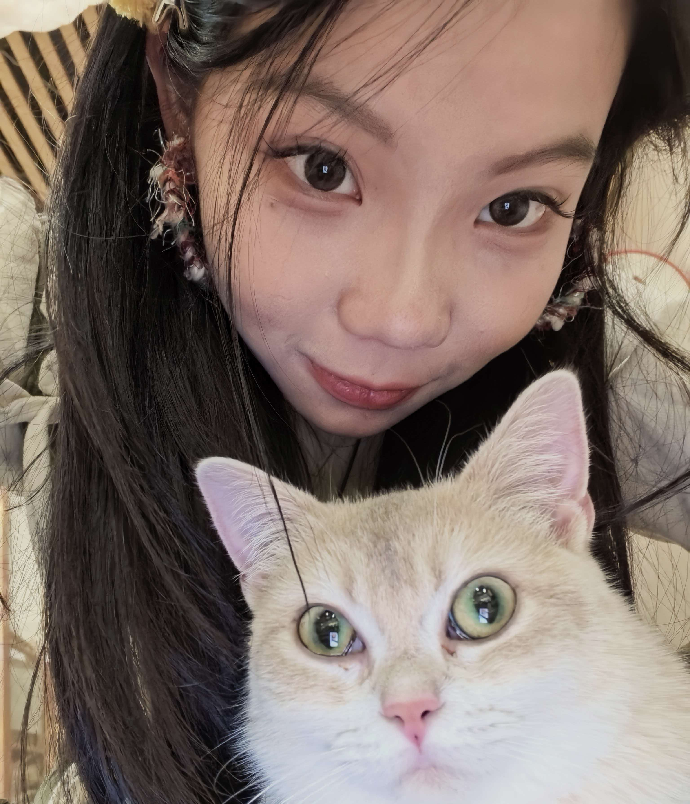

设计与美工 ·《羽蚀纪：天空的悼亡曲》
我是李瑶，《羽蚀纪：天空的悼亡曲》主要负责设计与美工，目前人工智能与工商管理专业在读。
在美术工作中，主要负责素材资源的收集整合与整体视觉风格的落地把控。前期我会大量搜集西幻题材的像素画参考，从经典像素游戏、概念设定集、中世纪纹样素材中提炼配色方案与构图规律，整理成风格参考板，作为后续所有美术产出的基准。
在《羽蚀纪》项目中，我主导整体视觉风格的定义与执行。围绕"壮美与凋零并存"的基调，色彩体系以暮金、灰蓝、褪色象牙白为主轴；UI层面融入手写铭文与残损纹样，使界面本身成为叙事载体。同时深度参与技能特效的色彩节奏把控、过场动画的光影情绪设计等跨环节协作，确保视觉语言在全流程中保持统一。